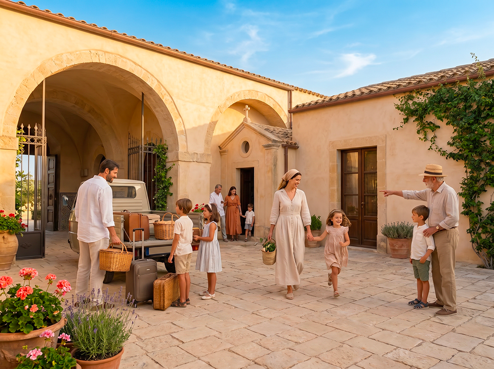

Vivere al Baglio San Michele significa scegliere un ritmo più lento e consapevole, in cui la cura delle relazioni, il contatto con la terra e la trasmissione dei valori tra generazioni diventano parte integrante della vita quotidiana. Non si tratta di una vita isolata, ma di una convivenza equilibrata tra intimità familiare e dimensione comunitaria.
Il ritmo della vita quotidiana

La vita al Baglio San Michele segue un ritmo scandito dai tempi della terra e dalla cura delle relazioni. Le giornate iniziano presto, con i suoni della campagna e il profumo del pane o del caffè preparato in casa. Molte famiglie scelgono di lavorare da remoto o di dedicarsi ad attività artigianali e agricole, alternando momenti di impegno individuale con il tempo dedicato ai figli e alla vita comune.
I pasti hanno un ruolo centrale. Non sono solo un momento di nutrimento, ma di incontro. Spesso si mangia insieme nel cortile o negli spazi comuni, soprattutto nei fine settimana e nelle sere d’estate. I prodotti dell’orto, dell’uliveto e delle masserie vicine entrano naturalmente nella cucina di ogni famiglia, favorendo una alimentazione semplice, stagionale e legata al territorio.
La gestione degli spazi e della vita in comune

Ogni nucleo familiare dispone di una propria abitazione privata, pensata per garantire intimità e tranquillità. Allo stesso tempo, il Baglio offre spazi condivisi — come il cortile, la cucina comune, la cappella e le aree verdi — che diventano luoghi di incontro naturale.
La cura degli spazi comuni è responsabilità di tutti. Non esiste un “personale di servizio”: sono le famiglie stesse, secondo turni o accordi, a occuparsi della manutenzione ordinaria, della preparazione di alcuni eventi e della gestione quotidiana degli ambienti condivisi. Questo modello rafforza il senso di corresponsabilità e riduce i costi di gestione.
Educazione e crescita dei figli

I bambini crescono in un ambiente in cui la natura, le relazioni intergenerazionali e il contatto con il lavoro manuale fanno parte della vita quotidiana. Non esiste una scuola interna strutturata, ma si favorisce un approccio educativo che integra l’apprendimento formale con l’esperienza diretta: l’orto, la cura degli animali, la partecipazione alle feste e ai lavori stagionali, il contatto con artigiani e contadini del territorio.
Le famiglie si supportano a vicenda nell’organizzazione di attività per i bambini e nel reciproco aiuto durante i periodi più impegnativi. La presenza di anziani e di adulti con mestieri diversi offre ai più piccoli un contesto ricco di stimoli e di figure di riferimento.
Lavoro, mestieri e attività produttive

Molti residenti lavorano da remoto, sfruttando la connettività disponibile e gli spazi dedicati allo studio e al lavoro individuale. Altri si dedicano ad attività legate alla terra, all’artigianato o alla trasformazione dei prodotti locali.
Il Baglio incoraggia la nascita di piccole attività produttive interne o in collaborazione con le aziende del territorio (apicoltura, orticoltura, trasformazione alimentare, artigianato). L’obiettivo non è la massimizzazione del profitto, ma la creazione di un’economia mista, dignitosa e coerente con i ritmi della vita comunitaria.
Decisioni, regole e gestione dei conflitti

Le decisioni che riguardano la vita comune vengono prese attraverso momenti di confronto strutturato, nel rispetto dei principi di sussidiarietà e partecipazione. Esistono regole chiare, condivise fin dall’inizio, che riguardano l’uso degli spazi, il rispetto del silenzio, la cura degli animali e la gestione dei rifiuti.
Quando sorgono tensioni o disaccordi, si privilegia il dialogo diretto e, quando necessario, il confronto alla presenza di figure di mediazione interne alla comunità. L’obiettivo non è evitare i conflitti, ma gestirli in modo maturo e costruttivo, come parte naturale della vita insieme.
Tradizioni, feste e trasmissione culturale

Il calendario dell’anno è scandito da momenti forti: la Festa di San Michele, le celebrazioni legate al raccolto, il Natale, la Pasqua e altre ricorrenze legate alla tradizione siciliana e cristiana. Queste occasioni non sono solo eventi sociali, ma momenti in cui si rinnova il senso di appartenenza e si trasmette alle nuove generazioni il valore della memoria, della fede e della convivialità.
Anche i gesti quotidiani — la preparazione del pane, la cura dell’orto, la benedizione della tavola — diventano occasioni per trasmettere valori e abitudini che altrimenti rischiano di perdersi.
Equilibrio tra privacy e vita comunitaria

Uno degli aspetti più delicati della vita al Baglio è il giusto equilibrio tra il bisogno di intimità familiare e la dimensione comunitaria. Non si tratta di una vita “in comune” continua, ma di una convivenza in cui ognuno può scegliere quando partecipare e quando ritirarsi nella propria casa.
Le famiglie che scelgono il Baglio sono generalmente persone che apprezzano la dimensione relazionale senza rinunciare alla propria autonomia. Il rispetto dei tempi e degli spazi altrui è considerato un valore fondamentale.
Ti riconosci in questo modo di vivere?
Se cerchi un luogo in cui crescere i tuoi figli con serenità, coltivare relazioni autentiche e vivere in armonia con il territorio, il Baglio San Michele potrebbe essere il posto giusto per te.